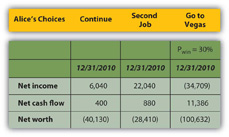
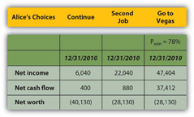

Risk affects financial decision making in mysterious ways, many of which are the subject of an entire area of scholarship now known as behavioral finance. The study of risk and the interpretation of probabilities are complex. In making financial decisions, a grasp of their basic dynamics is useful. One of the most important to understand is the idea of independence.
An independent eventAn event made neither more nor less probable by the occurrence of another event. is one that happens by chance. It cannot be willed or decided upon. The probability or likelihood of an independent event can be measured, based on its frequency in the past, and that probability can be used to predict whether it will recur. Independent events can be the result of complex situations. They can be studied to see which confluence of circumstances or conditions make them more or less likely or affect their probability. But an independent event is, in the end, no matter how skillfully analyzed, a matter of some chance or uncertainty or risk; it cannot be determined or chosen.
Alice can choose whether or not to go to Vegas, but she cannot choose whether or not to win. Winning—or losing—is an independent event. She can predict her chances, the probability, that she’ll win based on her past experiences, her apparent skill and knowledge, and the known odds of casino gambling (about which many studies have been done and there is much knowledge available). But she cannot choose to win; there is always some uncertainty or risk that she will not.
The probability of any one outcome for an event is always stated as a percentage of the total outcomes possible. An independent or risky event has at least two possible outcomes: it happens or it does not happen. There may be more outcomes possible, but there are at least two; if there were only one outcome possible, there would be no uncertainty or risk about the outcome.
For example, you have a “50-50 chance” of “heads” when you flip a coin, or a 50 percent probability. On average “heads” comes up half the time. That probability is based on historic frequency; that is, “on average” means that for all the times that coins have been flipped, half the time “heads” is the result. There are only two possible outcomes when you flip a coin, and there is a 50 percent chance of each. The probabilities of each possible outcome add up to 100 percent, because there is 100 percent probability that something will happen. In this case, half the time it is one result, and half the time it is the other. In general, the probabilities of each possible outcome—and there may be many—add to 100 percent.
Probabilities can be used in financial decisions to measure the expected result of an independent event. That expectation is based on the probabilities of each outcome and its result if it does occur. Suppose you have a little wager going on the coin flip; you will win a dollar if it come up “heads” and you will lose a dollar if it does not (“tails”). You have a 50 percent chance of $1.00 and a 50 percent chance of −$1.00. Half the time you can expect to gain a dollar, and half the time you can expect to lose a dollar. Your expectation of the average result, based on the historic frequency or probability of each outcome and its actual result, is
—note that the probabilityheads + the probabilitytails = 1 or 100%—because those are all the possible outcomes. The expected result for each outcome is its probability or likelihood multiplied by its result. The expected result or expected valueThe weighted average result for an event, or the value expected, on average, given the probabilities of each of its possible outcomes. for the action, for flipping a coin, is its weighted average outcome, with the “weights” being the probabilities of each of its outcomes.
If you get $1.00 every time the coin flips “heads” and it does so half the time, then half the time you get a dollar, or you can expect overall to realize half a dollar or $0.50 from flipping “heads.” The other half of the time, you can expect to lose a dollar, so your expectation has to include the possibility of flipping “tails” with an overall or average result of losing $0.50 or −$0.50. So you can expect 0.50 from one outcome and −0.50 from the other: altogether, you can expect 0.50 + −0.50 or 0 (which is why “flipping coins” is not a popular casino game.)
The expected value (E(V)) of an event is the sum of each possible outcome’s probability multiplied by its result, or
where Σ means summation, p is the probability of an outcome, r is its result, and n is the number of outcomes possible.
When faced with the uncertainty of an alternative that involves an independent event, it is often quite helpful to be able to at least calculate its expected value. Then, when making a decision, that expectation can be weighed against or compared to those of other choices.
For example, Alice has projected four possible outcomes for her finances depending on whether she continues, gets a second job, wins in Vegas, or loses in Vegas, but there are really only three choices: continue, second job, or go to Vegas—since winning or losing are outcomes of the one decision to go to Vegas. She knows, with little or no uncertainty, how her financial situation will look if she continues or gets a second job. To compare the Vegas choice with the other two, she needs to predict what she can expect from going to Vegas, given that she may win or lose once there.
Alice can calculate the expected result of going to Vegas if she knows the probabilities of its two outcomes, winning and losing. Alice does a bit of research and has a friend show her a few tricks and decides that for her the probability of winning is 30 percent, which makes the probability of losing 70 percent. (As there are only two possible outcomes in this case, their probabilities must add to 100 percent.) Her expected result in Vegas, then, is
Using the same calculations, she can project the expected result of going to Vegas on her pro forma financial statements (Figure 4.21 "Alice’s Expected Outcomes with a 30 Percent Chance of Winning in Vegas"). Look at the effect on her bottom lines:
Figure 4.21 Alice’s Expected Outcomes with a 30 Percent Chance of Winning in Vegas
If she only has a 30 percent chance of winning in Vegas, then going there at all is the worst choice for her in terms of her net income and net worth. Her net cash flow (CF) actually seems best with the Vegas option, but that assumes she can borrow to pay her gambling losses, so her losses don’t create net negative cash flow. She does, however, create debt.
Alice can also calculate what the probability of winning would have to be to make it a worthwhile choice at all, that is, to give her at least as good a result as either of her other choices (Figure 4.22 "Alice’s Expected Outcomes to Make Vegas a Competitive Choice").
Figure 4.22 Alice’s Expected Outcomes to Make Vegas a Competitive Choice
To be the best choice in terms of all three bottom lines, Alice would have to have a 78 percent chance of winning at Vegas.
Her net worth would still be negative, but all three bottom lines would be at least as good or better than they would be with her other two choices. If Alice thought she had at least a 78 percent chance of winning and could tolerate the risk that she might not, Vegas would be a viable choice for her.
Those are two very big “ifs,” but by being able to project an expected value or result for each of her choices, using the probabilities of each outcome for the choice with uncertainty, Alice can at least measure and compare the choices.
Using probabilities to derive the expected value of a choice provides a way to evaluate an alternative with uncertainty. It requires projecting the probabilities and results of each possible outcome or independent event. It cannot remove the uncertainty or the risk that independence presents, but it can at least provide a way to measure and then compare with other measurable, certain or uncertain, choices.